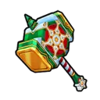

Maça Natalina
Maça · Tier 12 · Nível 38
... para um ano novo daqueles.
Atributos
Ataque
730
Defesa
183
Economia
Valor
2.900.000
Tempo de fabricação
1d 1h
XP do comerciante
220.000
Trabalhadores: Ferreiro 31, Carpinteiro 27, Sacerdotisa 24
Receita


Marcos do projeto
6
Tempo de fabricação -20%
14
Valor +25%
26
-1 Núcleo de Magma
40
Chance de fabricação múltipla +10%
60
Chance de qualidade +1